Project - Predicting Stock Prices through Time series Analysis
Abstract
This study focuses on applying and evaluating various time series analysis models for the prediction of stock prices, with an emphasis on understanding the nuances, behaviour, and potential accuracy of each model. While our study conducts a comparative analysis, its primary purpose is to delve deep into the insights and observations we obtained during the application of these models on the same dataset. Our work revolves around using ARIMA, LSTM, and FB Prophet models to forecast future stock prices of Microsoft (MSFT). This stock was selected based on its high trading volumes and considerable market influence. For our dataset, we chose a period of five years, from June 2018 to June 2023, which covers the period before, during and after the pandemic. While longer time periods were considered, we felt that the market environment and price action during this 5-year period would suffice to represent a varied set of data more meaningful than any recent period in the past. FB Prophet serves as the benchmark tool against which the other models were evaluated, utilizing the Root Mean Squared Error (RMSE) as the primary performance metric. An interesting facet of this investigation was the exploration of a hybrid model approach, combining the strengths of ARIMA and LSTM. This allowed for the examination of both short-term and long-term predictive capabilities of these models, and their effectiveness when combined. Ultimately, this study underscores that there is no one-size-fits-all model for stock price prediction. Each model’s effectiveness depends significantly on various factors such as the length of the forecast period, the nature of the data, and the specific application context.
1. Introduction
Predicting stock prices is an ever-present challenge within the financial industry, made more complex by the multitude of factors such as economic and news events, and investor sentiment. In this study, we attempt to bring some clarity by employing several time-series forecasting models: focusing our investigation on Microsoft (MSFT), an important component in the US stock market with high trading volumes. We chose a dataset spanning five years, capturing both the pre- and post-pandemic periods. This gives us a diverse and comprehensive dataset that adds depth to our analysis. Our approach involves the application of several models, namely ARIMA (Autoregressive Integrated Moving Average), LSTM (Long Short-Term Memory), and a novel hybrid approach. The effectiveness of these models is contrasted against FB Prophet, a benchmark tool commonly used in the financial industry. The intent of this study goes beyond merely comparing models. We aim to delve into the intricacies of their operation, understanding their data preprocessing needs, and evaluating their performance using suitable metrics. Through this process, we aim to provide a detailed analysis of each model’s strengths and weaknesses.
Business case: In wealth management at banks, relationship managers often provide advice based on a standardized ‘house view’, formulated through a mix of financial modelling, fundamental and technical analysis, and human judgement. This ‘black box’ approach often leads to a lack of transparency concerning the basis and success rates of these investment strategies. This study aims to improve this scenario by exploring the use of time-series models to predict individual stocks prices, thereby enhancing the banks’ ability to provide science-based investment advice. This could potentially lead to more transparent and personalized investment strategies, and ultimately improve customer satisfaction and trust in the investment advice they receive.
2. Methodology
In this project, we employ a systematic approach to analysing and predicting stock prices, which involves several steps:
2.1 Data collection
We gathered historical stock price data for Microsoft (MSFT) from Yahoo Finance. Our data spans a period of five years, from June 2018 to June 2023, which includes both pre- and post-pandemic periods.
2.2 Data Pre-processing
To prepare the data for our models, we carried out several pre-processing steps. These steps may vary between models, but they generally include handling missing data, normalizing or standardizing the data, and potentially detrending or de-seasonalizing the data where necessary.
2.3 Model Selection and Implementation
We selected several time-series forecasting models for our study, including ARIMA, LSTM, and a novel hybrid approach. These models were implemented using the Python programming language with the help of libraries such as statsmodels for ARIMA, Keras for LSTM, and FB Prophet for our benchmark model. We are also exploring some other models to see if they have any novel results.
2.4 Parameter Adjustments
Each model was fine-tuned to optimize performance. This involved adjusting various parameters specific to each model to minimize forecasting error. For example, for ARIMA, we determined the optimal order parameters (p, d, q) using techniques like the AIC criterion or PACF and ACF plots.
2.5 Model Evaluation
To evaluate the performance of our models, we split our data set into a training set (2018-06-15 to 2023-1-15) and a test set (2023-1-15 to 2023-6-15). The models were trained on the training data and their predictions were compared to the actual prices in the test set. We used several metrics to measure the accuracy of the models’ predictions, including Mean Absolute Error (MAE), Root Mean Square Error (RMSE).
2.6 Analysis and Conclusion
Finally, we conducted a comparative analysis of the performance of each model. We discussed the strengths and weaknesses of each model, insights gained, and the implications for real-world investment decision-making.
2.7 Common metrics for Time series analyses
The below metrics will be used to evaluate our model results.
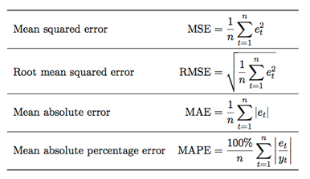
3. Models
3.1 Auto-Regressive Intergration Moving Ave (ARIMA)
The traditional statistical model we adopted in the time series analysis is the ARIMA model. It is a combination of autoregressive (AR) and moving average (MA). “I” in the middle means that the model employs differencing of raw observations to make the time-series stationary. ARIMA can be used for modeling stationary time series or non-stationary time series that can become stationary through differentiation. Stationary series are those whose expected value and variance do not change over time.
An ARIMA model is defined by its three order parameters, p, d, q. The parameter p represents the number of autoregressive terms or the number of “lag observations”. It determines the outcome of the model by providing lagged data points. The parameter d, known as the degree of differencing, indicates how many times the lagged indicators have been subtracted to achieve data stationarity. The parameter q signifies the number of forecast errors in the model and is often referred to as the size of the moving average window.
The process of building the ARIMA model can be divided into three phases. In the first phase is to check if the time series is stationary by examining ACF, PACF, and Dickey-Fuller tests. The second phase is to choose parameters and the performance of the model would be tested in the third phase.
3.2 Long Short-Term Memory (LSTM)
LSTM is a recurrent neural network (RNN) model and is widely adopted in the time series analysis. The main idea behind LSTM cells is to learn the important parts of the sequence seen so far and forget the less important ones. LSTM cells are designed to deal with the problem of “long-term dependence” and the memory capacity of standard recurrent cell is improved by introducing a gate into the cell. In particular, three types of gates are involved in each cell, namely forget gate, memory gate, and output gate. In cells, data can be disposed, filtered, or added for the next cells by using gates. The amount of data entering a cell at a time is referred to as “batch size”. The number of complete runs through the data is known as an “epoch”.
In the stock price prediction, we can put the historical close prices into the model and tune the hyperparameters to optimize the model performance. Some important hyperparameters include units, epochs, optimizer, input shape, batch size etc.
3.3 Facebook Prophet
Prophet was developed by Facebook as an algorithm for the prediction of time series values for different business applications. Prophet is a useful tool for time series forecasting. It incorporates non-linear trends, as well as yearly, weekly, and daily seasonality patterns, and prides itself on being able to predict holiday effects. It excels in forecasting time series that exhibit significant seasonal variations and possess a substantial historical data spanning multiple seasons.
It is an additive model consisting of four components: g(t) is a trend to capture the general trend of the series. s(t) is a seasonality component and h(t) is a Holidays component. The error term εt stands for random fluctuations that cannot be explained by the model.
3.4 ARIMA & LSTM Hybrid
Both ARIMA and LSTM models have their own strengths and weaknesses. ARIMA has difficulties with non-linear time series data whereas neural networks can work with linear and non-linear time series data. However, LSTM requires long training time and parameter selection can be challenging. To leverage the strengths of both models, a hybrid approach is implemented to capitalize on their respective expertise. The aim is to achieve more accurate predictions compared to using either model individually. In this hybrid model, the ARIMA component is applied to capture the trend component, while the LSTM component is utilized to model both the seasonal and residual components of the time series. By combining the two models, it is expected to enhance the overall forecasting performance and capture a broader range of patterns in the data.
Here is a summary of all the adopted models in our project:
| Type | Name | Concept | Applications | Pros | Cons |
|---|---|---|---|---|---|
| Statistical model | ARIMA | A model that characterizes time series by the aspects of autoregressive, integrated, and moving average terms. | Analyse and forecast time series data | Simple and interpretable. Accurate in short term prediction |
Limitation in non-linear patterns Sensitivity in parameter selection |
| Recurrent neural network (RNN) model | LSTM | Long-Short Term Memory model capable of learning order dependence for sequence prediction issues. | Deep learning, speech recognition, machine translation | Capture long-term and non-linear patterns Do not rely on specific data assumptions |
Computation extensive Require more data Less interpretable |
| Statistical & machine learning | FB PROPHET | An additive model developed by Facebook, for forecasting time series data. Used best for time series with strong seasonal effects and a long history. | Forecast business results for planning and goal setting. | Simple interface Capture seasonality and patterns Less data prepossessing |
Limited to univariant forecasting Less customized |
| Hybrid Model | ARIMA + LSTM (hybrid) | Hybrid LSTM and ARIMA model combines LSTM’s non-linear capabilities with ARIMA’s ability to capture linear trends. | Time series prediction and integrate non-linear trend | Comprehensive Improve model performance Adaptability |
Complexity Further studies required in model architecture |
4. Results and Analysis
4.1 ARIMA
When using ARIMA, we initially wanted to see how accurate the model could be for predicting longer time frames. For this purpose, we used a Train-test split configuration where our test range would span a 5- month period (2023-1-15 to 2023-6-15). We then checked the data for stationarity using the Dickey-Fuller test. We obtained a p-value of 0.857 which confirmed that the data was not stationary. We performed a pairwise differencing to make this data stationary. The resultant stationarity can be observed visually below, with the differenced data now centred around the mean. We can also confirm this via another Dickey-Fuller test, where we now obtain a revised p-value closer to zero.
When determining the parameters for the AR and MA parts of the model, we plotted the ACF and PACF plots for the differenced data to determine the values of p and q. Here, an ARIMA model of order (1,1,1) seemed reasonable to be used for our Manual-Arima workflow. At the same time, we also used the Auto-Arima function to obtain the optimal (p,d,q) values which had the lowest values of AIC and BIC (Auto-Arima workflow). This recommended an ARIMA model of (4,1,1). We compared both workflows and proceeded on with the Auto-Arima which had scored better in the MAE, MAPE and RSME metrics.
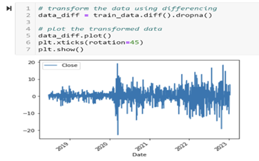
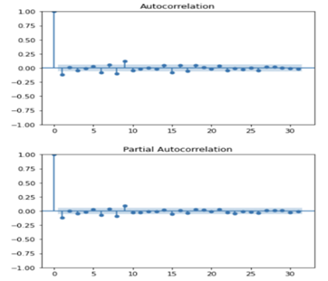
We then applied this model to our test data range (5 months) and obtained predictions as show in the chart below, which seems to predict a “flat” stock price for the next 5 months. This runs contrary to price dynamics for actively traded stocks, where prices are not likely to remain the same daily. Here, we concluded that the ARIMA model could not derive meaningful results when predicting for longer time frames and that longer term forecasting using ARIMA were prone to converging at the mean. The ARIMA model only uses the previous X observations to make a prediction. Furthermore, prediction errors accumulate, and this results in the ARIMA model simply predicting a straight line for longer time frames. We therefore changed our test range to a shorter time frame of 1 month and re-visited the above steps to see the difference. We noted that our RSME score improved to 16.399 from the previous 46.55, and that our model no longer makes a ‘flat’ prediction of prices.
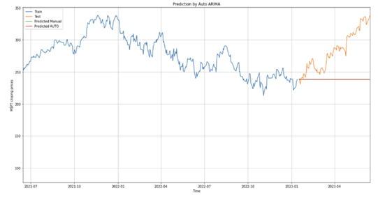
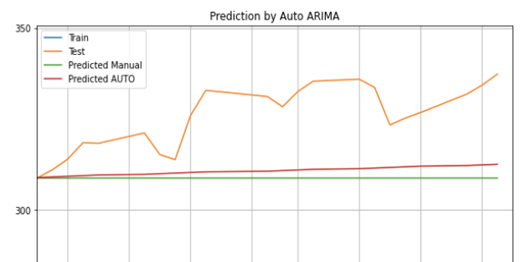
This leads us to conclude that the ARIMA model, on its own, would only be suited to make short term price predictions (a few days out). Next, we explore other models which may be better suited for making longer term predictions.
4.2 LSTM
For our testing we used LSTM in 2 ways – the first was with “default” settings and the second was with parameter hyper-tuning. The results varied wildly and yielded many interesting insights. Both used the Adaptive Moment Estimation (Adam) optimizer. Although there are many other alternative optimizers, adam was selected not only because it is widely used (and as a result, widely watched), but also because it is specifically designed for training deep learning neural networks. We would have used others such as adagrad, adadelta, RMSprop and the plethora of optimizers out there but time is a factor, and it seems it might stray from our topic at hand.
The “default” LSTM was run with a batch size of 1 and an epoch of 3. The RMSE hovers around 7-9 across runs and although the model was unable to predict precise price points, it accurately predicted trends on when the stock went up and down. (figure below)
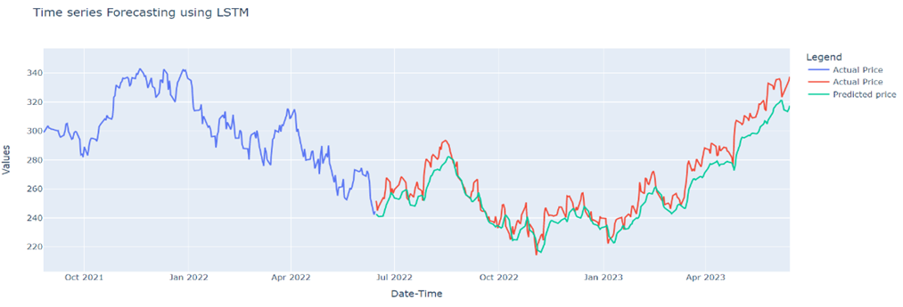
The second model, with hyper-tuning, showed much more promise but tended to overfit. It trades robustness for more accuracy. The reverse of the above happened, where stock prices were predicted with a much higher degree of precision, some days a few cents off but overfit. RMSE drops to as low as 1 or even 0.05 (figure of extreme example below). What happens is that the model ends up using the previous day’s close price to predict the next day’s price. If you shift the predictions one day backwards it makes an almost perfect overlay. I propose that the best would be to use hyper-tuning with a bigger range of stocks so that the model can learn more meaningful patterns. Finer tuning of parameters also affects the results as well, and as such further experimentation could be done.
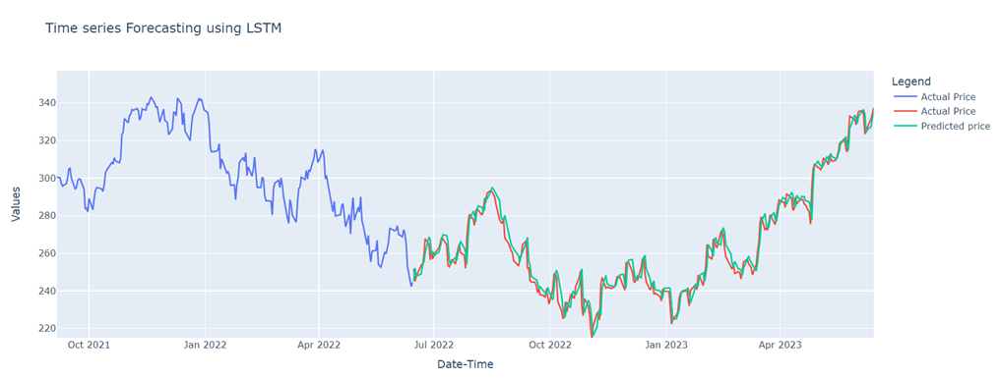
4.3 FB Prophet
There is not much to mention on our process for using FB Prophet since most of it was straightforward. There was no parameter tuning and such. The Prophet package provides intuitive parameters which are easy to use and specify for trend, seasonality and holiday.
However, to note is that the RMSE of this model is quite high as compared to the LSTM since it tries to give more of a ballpark estimate rather than a precise number. By that standard, if we consider whether the actual number lands within the predicted upper and lower bounds it is more accurate than simply taking it at face value. The RMSE typically floats around 18.8 with a minor deviation past 2 decimal places.
The 3 figures below in order of presentation shows the overall prediction period (“zoomed out”), day-to-day view for predictions (“zoomed in”), and finally the table of numbers for a more numerical view of the predictions. One thing to note is that each red dot is a single day.
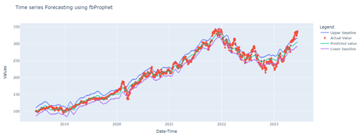
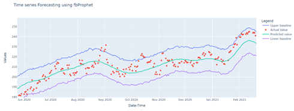
4.4 Moving Averages, Linear Regression & K-Nearest Neighbours
As part of our study, we also explored the use of other models commonly used in trading. Moving averages and Linear regression form the basis for commonly used Technical Analysis indicators like Exponential Moving Averages, Bollinger bands and Linear Regression Channels. We applied the same dataset and specified a 75-25% train-test split.
Moving averages are widely used to smooth out fluctuations and identify trends in stock prices. They calculate the average value of a stock’s price over a specified period and are commonly used to generate buy or sell signals. Our moving average model drew a RMSE score of 38.46 but was not able to adjust to sudden shifts in trends, opting for an average between the two price boundaries.
Linear regression is a statistical technique used to model the relationship between a dependent variable (stock price) and one or more independent variables (time). In stock price prediction, linear regression could be used to fit a straight line to historical data, capturing the overall trend. However, our Linear Regression model seemed to fare worse than our Moving Average model, with an RMSE score of 89.25. The model was only able to project future values based on a fitted linear trendline. While Linear Regression can be simple to use and intuitive, it fails to account for more complex, non-linear trends. Furthermore, it assumes that the relationship between the dependent and independent variables remain constant.
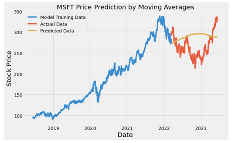
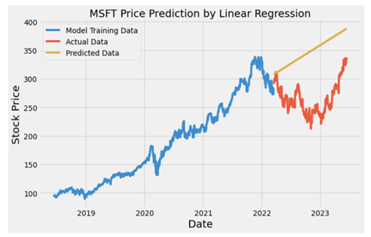
K-Nearest Neighbours (KNN)
K-nearest neighbour is a commonly used Machine Learning algorithm used for classification and regression tasks in various fields including finance. In the context of stock price prediction, we wanted to explore if the KNN model could be used to predict future prices based on the historical prices of K nearest neighbours. While KNN is more commonly used for classification tasks, it could also be applied to regression problems. Our KNN model fared better with an RMSE score of 28.65 but was not able to pick up on any trends in future prices.
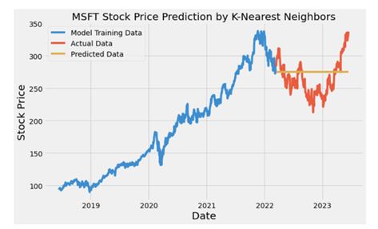
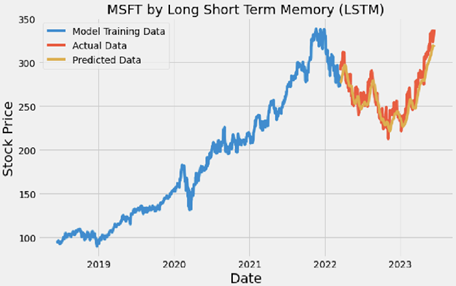
We concluded that the 3 models performed worse that our LSTM base model, leading us to conclude that they are unable to capture temporal dynamics and patterns inherent in stock price data as effectively as other time series forecasting models.
4.5 ARIMA & LSTM HYBRID
The dominant model is in the hybrid is LSTM, as the ARIMA model does not have enough lags to predict the long-term modelling conditions. To improve our model, we have considered additional features from technical analysis such as Bollinger Bands, but ARIMA cannot incorporate those features as it lacks feature selection.
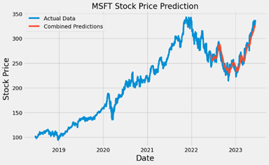
4.6 Network Models
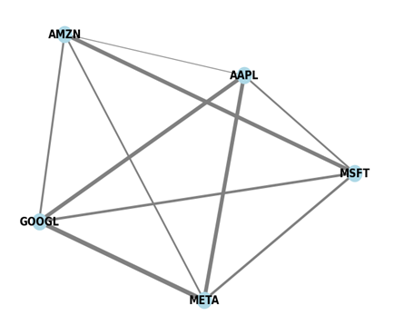
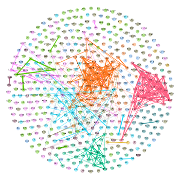
Network Models aid in modelling relationships between varioud stocks. The key advantage of network modelling is capturing complex relationships between various stocks through network dynamics (opinion, adoption, decision), and this would aid in predicting trends through various similarities such as Eigen Vector Similarity, Jaccard Similarity etc. These models would boost the accuracy of predictions as features generated here can be used for our LSTM models. While the network we generated was simple and able to model stocks closest to and most different from MSFT for hedging, a more complex model can build more features and explore relationships such as Key Opinion Leader Stocks for systemic importance, Diversity Centrality to enable diversified portfolios etc.
5. Limitations and Future considerations
5.1 Model Limitations
The ARIMA Model is limited by the number of lags available in the equation. This makes feature selection inherently impossible. Additionally, many of our other models such as the KNN were found to not capture information on the time series. LSTM while being the best performing model, is extremely computationally intense.
5.2 Data set and Hyper parameter tuning
While prediction on just the time series trend may give us some information, considering more features such as the technical analysis or fundamental analysis would improve our results considerably. To model complex relationships, we could consider network analysis as well as building more technical analysis indicators as features in our model (as we have in our hybrid model)
6. Conclusion
Our study aimed to evaluate multiple models for time series analysis against MSFT and our findings reveal that there is no one-size-fits-all model for stock price prediction. Exploring conventional and unconventional time series models, we found each model has its strengths and weaknesses, and their effectiveness depends on various factors such as the length of the forecast period and the nature of the data. Additionally, the novel LSTM ARIMA hybrid model considered is completed dominated by the LSTM results due to ARIMA not having feature selection and its inability to capture nonlinear trends/features. Hence, we propose that the LSTM model, will yield the best results but highlight that it is computationally expensive. Further, considering network modelling to capture features and additional data considerations such as including technical/fundamental indicators can improve the model’s performance drastically. By utilizing these models, wealth management institutions can enhance their ability to provide science-based investment advice, leading to more transparent and personalized investment strategies for improved customer satisfaction and trust.
Appendix
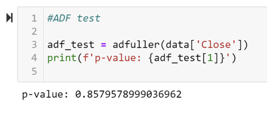
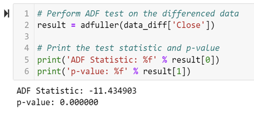
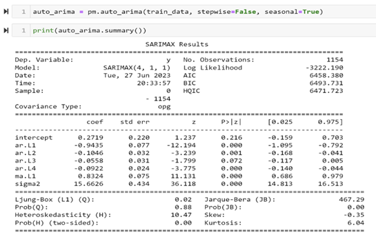
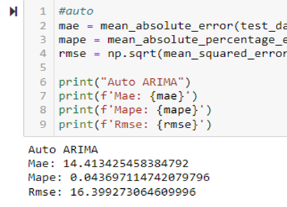
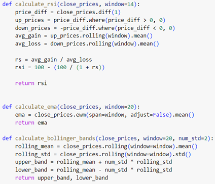
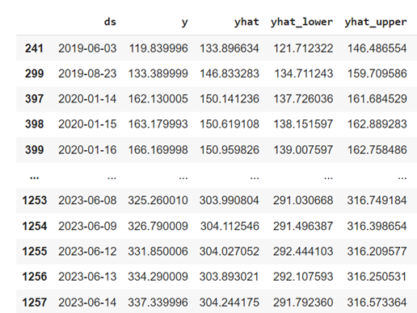
References
Fernando, J. (2023). Moving Average (MA): Purpose, Uses, Formula, and Examples. Investopedia. https://www.investopedia.com/terms/m/movingaverage.asp
Beers, B. (2023). What is Regression? Definition, Calculation, and Example. Investopedia. https://www.investopedia.com/terms/r/regression.asp
Harrison, O. (2019, July 14). Machine Learning Basics with the K-Nearest Neighbors Algorithm. Medium. https://towardsdatascience.com/machine-learning-basics-with-the-k-nearest-neighbors-algorithm-6a6e71d01761